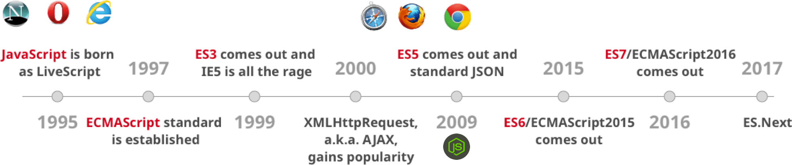
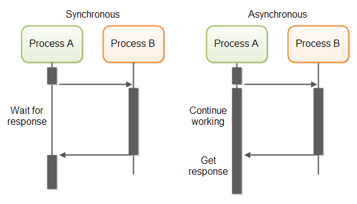
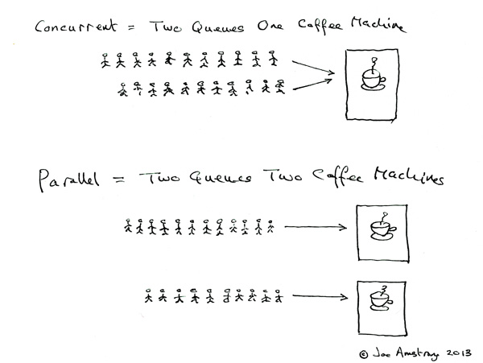
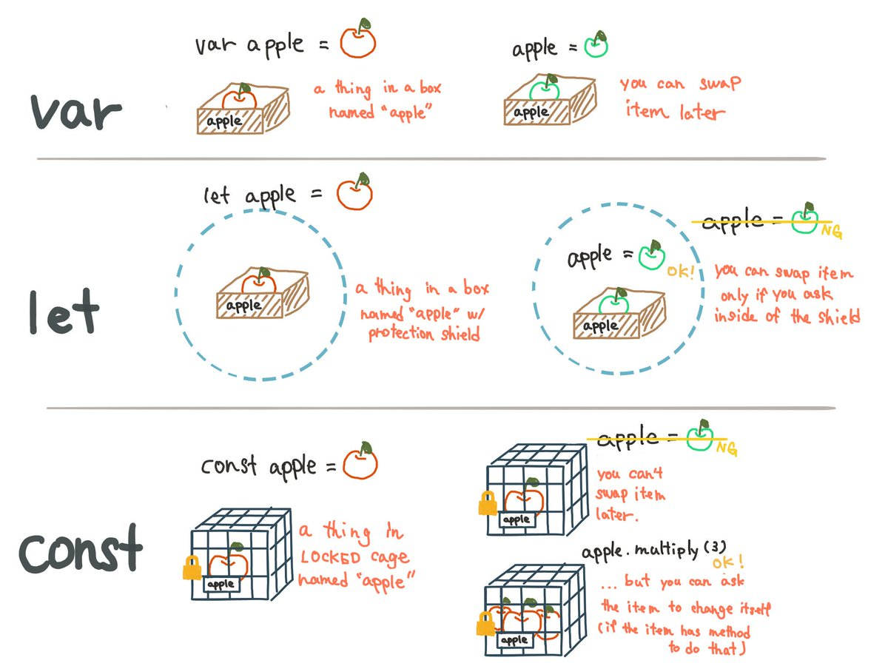

Javascript today
Maxence POUTORD
Evolution of JS
Recall
Synchronous vs Asynchronous
JavaScript is Asynchronous
Concurency vs Parallel
JavaScript is Concurent
Data types in JS
- Number
- String
- Boolean
- Symbol (new in ES2015)
- Object
- Function
- Array
- Date
- RegExp
- null
- undefined
ECMAScript 2015 (and beyond)

Assigning a variable
var, let and const
By @kosamari
const !== immutable
const hero = {
name: 'The Punisher'
}
hero.name: 'Daredevil'
console.log(hero) // Object {name: "Daredevil"}
That not a reason not to use it!
let&const are block scoped
var x = 1
if (true) {
var x = 2 // same variable
console.log(x) // 2
}
console.log(x) // 2
let x = 1
if (true) {
let x = 2 // different variable
console.log(x) // 2
}
console.log(x) // 1
functions
Arrow function
shorter syntax
function (a, b) {
return a + b
}
(a, b) => a + b
Doesn't redefine: this, arguments, super and new.target
Bye bye "var self = this"!
Arrow functions
var fruits = ["apple", "banana", "kiwi"]
ES5:
var fruitsUpperCase = fruits.map(function (f) {
return f.toUpperCase()
})
ES2015+:
const fruitsUpperCase = fruits.map(f => { return f.toUpperCase() })// or better: const fruitsUpperCase = fruit.map(f => f.toUpperCase())
classical / prototypal inheritance
- A class is a blueprint
- A prototype is an object instance.
Prototypal OOP
- Each object is based on another one
- Each function is potentialy a constructor
function Hero (options) {
this.name = options.name
this.nickname = options.nickname
this.family = options.family
}
const logan = new Hero({
name: 'Logan',
nickname: 'Wolverine',
family: 'Marvel'
})
Method inside constructor
function Hero (name) {
this.name = name
this.sayMyName = function () {
return "I'm " + this.name
}
}
var groot = new Hero('Groot')
var heisenberg = new Hero('Heisenberg')
Each instance redefine his own method
Method outside constructor
function Hero (name) {
this.name = name
}
Hero.prototype.sayMyName = function () {
return "I'm " + this.name
}
var groot = new Hero('Groot')
var heisenberg = new Hero('Heisenberg')
Instances share the same method
Class (ES2015)
class Hero {
constructor (name) {
this.name = name
}
sayMyName () {
return "I'm " + this.name
}
}
===
function Hero (name) {
this.name = name
}
Hero.prototype.sayMyName = function () {
return "I'm " + this.name
}
class are NOT like OO classes (= syntactic sugar)
Inheritance
Composition over inheritance
Asynchronous
10 Things You’ll Find Shocking About Asynchronous Operations:
— I Am Devloper (@iamdevloper) December 12, 2016
3.
2.
7.
4.
6.
1.
9.
10.
5.
8.
Because JS is Asynchronous
function ajaxBurgers (url, callback) { const fakeDelay = Math.random() * 1500 const fakeResponse = ['🍔', '🌮', '🌭'] setTimeout(() => { callback(fakeResponse) }, fakeDelay) } const menu = {} menu.drink = '🍹' menu.side = '🍟'ajaxBurgers('http://burgers.maxpou.fr', (data) => { menu.burger = data[0] })console.log(menu) // {drink: "🍹", side: "🍟"}// ... after ... console.log(menu) // {drink: "🍹", side: "🍟", burger: "🍔"}
Callback
Lead to callback hell
Callback hell
getData(function (a) {
getMoreData(a, function (b) {
getMoreData(b, function (c) {
getMoreData(c, function (d) {
getMoreData(d, function (e) {
// ...
})
})
})
})
})
Promises (ES2015)

Async / Await (ES2016)
Others ES2015+ features
Template
const hostel = { name: "Happy hostel", price: 12.5, stars: 4.5 }
// es5
var html = "" + hostel.name + "
"
html += "" + hostel.price + "€"
html += "" + hostel.stars + ""
// ES2015
const html = `
${hostel.name}
${hostel.price}€
${hostel.stars}
`
Default parameters
function multiply(a, b = 1) {
return a * b
}
multiply(5, 2) // 10
multiply(5, 1) // 5
multiply(5) // 5
Import / export
// my-module.js
export default function cube (x) {
return x * x * x
}
// app.js
import cube from 'my-module'
console.log(cube(3)) // 27
See also:
- Spread syntax, Rest parameters
const heros = [ "Dardevil", "Punisher" ] const fullteam = [ "J. Jones", "Luke Cage", ...heros ] fullteam // [ "J. Jones", "Luke Cage", "Dardevil", "Punisher" ] - For...of
- Generator
The rise of the functionnal programming

In a nutshell
- It's a programming paradigm (such as OOP)
- It's not incompatible with OOP
- Use a declarative approach (rather than imperative)
- Brings concepts to produce better softwares
Purity
var number = 2
function incrementBy (increment) {
launchNuclearMissile()
return number + increment
}
- This function produce side effects
- Result depends on the number of execution (not idempotent)
function increment (number, increment) {
return number + increment
}
Immutability
let properties = [{/* */}]
for (let i = 0; i < properties.length; i++) {
properties[i].price = properties[i].price * 1.2
properties[i].curency = "€"
}
- Break Single Responsability Princile (S of SOLID)
- After the loop properties state change. It doesn't represent properties anymore
Thanks for the headache - Non thread-safe code
High order function
A higher-order function is a function that does at least one of the following:
- takes one or more functions as arguments,
- returns a function as its result.
function add (x) {
return function (y) {
return x + y
}
}
var add4 = add(4)
add4(38) // 42
add4(4) // 8
Embrace the power of Array
const formatedHighRatedProperties = properties
.filter(p => p.rate >= 70 || p.isNew)
.sort((a, b) => b.rate - a.rate)
.map(p => p.name + ", " + p.city)
Be declarative
Cheat sheet
Map/filter/reduce in a tweet:
— Steven Luscher (@steveluscher) 10 juin 2016
map([🌽, 🐮, 🐔], cook)
=> [🍿, 🍔, 🍳]
filter([🍿, 🍔, 🍳], isVegetarian)
=> [🍿, 🍳]
reduce([🍿, 🍳], eat)
=> 💩
JavaScript Dev Tools
(That Put Other Dev Tools to Shame)

Browsers Support

Chrome dev tools
developer.chrome.com/devtoolsNPM
Package Manager (surch as Composer)
{
"name": "js-today",
"version": "1.0.0",
"author": "Maxence POUTORD <github@maxpou.fr>",
"license": "MIT",
"repository": {
"type": "git",
"url": "https://github.com/maxpou-slides/js-today"
},
"main": "app.js",
"scripts": {
"start": "node_modules/http-server/bin/http-server",
"test": "echo \"Error: no test specified\" && exit 1",
"lint": "eslint ."
},
"devDependencies": {
"eslint": "^3.12.2",
"http-server": "^0.9.0"
}
}
Babel
Transform ES2015+ to ES5
// beautiful ES2015+
[1,2,3,4,5]
.filter(n => n % 2 === 0)
.map(n => n + 1)
// ugly es5
[1, 2, 3, 4, 5].filter(function (n) {
return n % 2 === 0;
}).map(function (n) {
return n + 1;
});
Don't forget the babel-preset-env